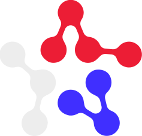

Шаги стоят на вертикальной схемной линии: пройденные подписаны, текущий — красная точка, будущие — пунктир. Каждый шаг можно пропустить и вернуться позже.

Каждое согласие даётся отдельно. Полный текст открывается по ссылке.
Проверьте, всё ли верно. Нажмите на строку, чтобы поправить.
Pydantic раньше не встречался в справочнике: мы добавили его и связали с FastAPI. Следующие шаги поднимут точки.
Результаты соревнований ФСП — самое сильное подтверждение. Они поднимут навыки и грейд.
Между кадрами 240 мс, точки загораются по одной. Затем тост «Твои победы засчитаны: 6 навыков подтверждены ФСП». При «уменьшить движение» — сразу кадр 3.